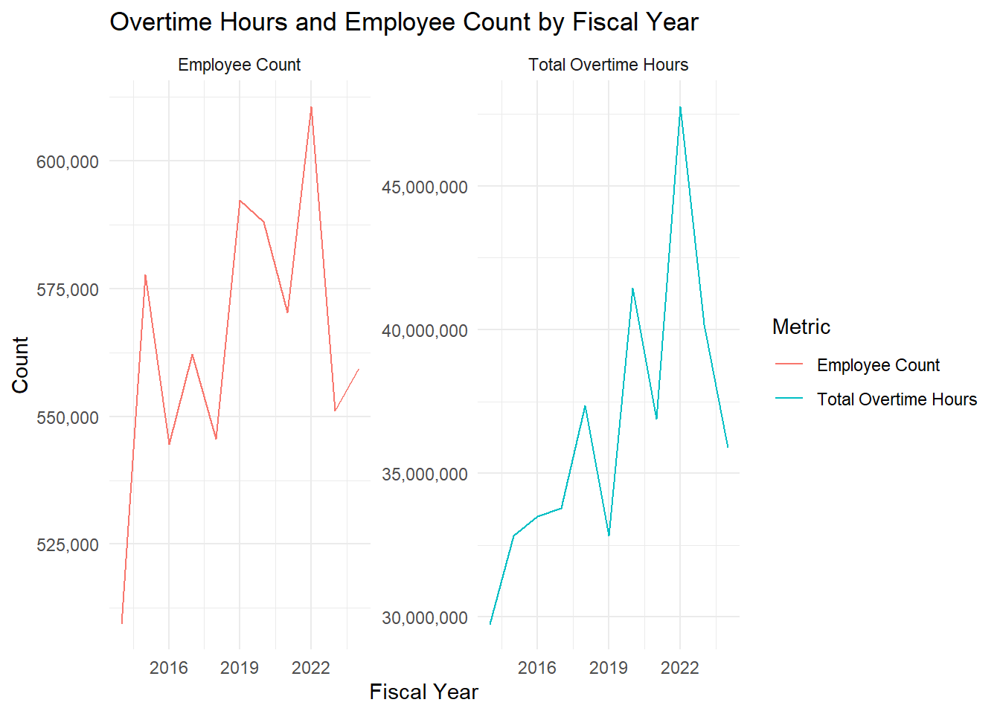

The goal for this analysis is to analyze the NYC Payroll and report possible savings for the CATS Commissioners consideration
Point 1 - Employee Salary Table for NYC Mayor, Eric L Adams
The following table displays NYC Mayor Eric L Adams salary over a 10 year career span in public office. We are required to review this data to understand how NYC taxpayer monies are spent on highly ranked officials like Mr. Adams. As well as, how his salary over the past 10 years compares to the regular NYC employee.
The Mayor’s salary has consistently increased since he became Borough President of Brooklyn. As we analyze the data set, we will see that the adjustment of Mayor’s salary every year is differs from non high ranking employees and high ranking officials in NYC’s payroll.
Point 2 - Analysis of NYC Payroll Data for All NYC Employees
The following findings1 below serve to help identify factors to consider as we conduct analysis for the purposes of recommending the best policy for adoption by the CATS Commissioners.
Position with the highest base rate of pay
The position with the highest base rate of pay is the Chief Actuary who has a per Annum salary of $296,470.38. The fixed salary of the Chief Actuary is comparable to the Mayor and other high ranking officials.
Employee with the single highest city total payroll (year included)
The government employee with the single highest total payroll is Chief Marine Engineer, Pavel Kotelevich. Pavel’s total payroll is $697,052.01. This amount includes his base salary per annum and overtime wages paid. Since Pavel had over 1000 hours of overtime hours, he has received substantial overtime wages despite making a fixed salary of 169,520 dollars in fiscal year 2024.
Employee with the highest overtime hours
The Department of Correction has the most overtime hours recorded compared to any other agency. The results show that James Inernicola has one of the highest overtime hours recorded, 3692.90 hours. We can assume that the Department of Correction allocates a part of it’s budget to overtime wages for the police force. Therefore, the city’s payroll must also allocate a part of it’s budget for overtime expenses in large department’s like the Department of Correction.
Agency with the highest average total annual payroll
The Districting Commission has on record one of the highest average annual payroll recorded at $158,699.67 in 2014. This result conveys how the agency allocates this amount each year in their budget to pay each employee wages.
Agency with the most employees on payroll in each year
The Department of ED Pedagogical has the highest recorded number of employees on payroll of over 100,000 employees employed per year. The city payroll must allocate a part of it’s budget to the wages and hiring expenses of this agency and other agencies.
Agency with the highest average overtime usage (compared to regular hours)
The Fire Department has the largest average overtime usage compared to the average regular hours recorded at 346.40 hours. Similar to the Department of Correction, the Fire Department has to allocate a part of it’s budget to overtime wages of it’s firefighter workforce.
Average salary of employees who work outside the five boroughs
The average salary of employees that work outside of the 5 NYC boroughs is little over $100,000.00. This means that the taxpayer monies that fund these jobs are not being spent in the NYC market or economy.
New York City’s aggregate payroll over the past 10 years
The growth rate from 2014 to 2024 is approximately 46.86%. This is the percentage increase in the total payroll from 2014 to 2024, a 10 year span. This means that NYC’s aggregate wage increases are on track to meet 50% in the coming years
Policy 1 - Capping Salaries at Mayoral Level
The data set contains information on the different tiers of income for employees (i.e. per annum, per hour, etc.) The main group of employee with a fixed salary (per Annum) are high ranking officials including the Mayor Eric L Adams. The following findings showcase the results of capping all employee wages at the Mayoral Level.
Total Mayoral Pay For each Fiscal Year
The following table displays the salary of the Mayor Eric L Adams from 2014 to 2024.
Total Payroll of Employees Paid More than the Mayor
Based on the data displayed in the table, there are over 90 employees who make more than the Mayor Eric L Adams each fiscal year. This table allows us to conclude that fixed salaries are not based on title in the NYC government. Therefore, capping the salary at the mayoral level may be feasible given that the position holds no weight in payroll.
Total Savings if the Mayor’s Salary is the Limit
According to the table above, the total savings generated each year by capping employee salary based on the Mayor’s Salary does not exceed $200,000.
Agencies and positions that would be affected the most by this policy
The following table displays only the top earning employees of each fiscal year who would be affected.
According to this table above, over 90 employees will be affected by the adoption of this policy.2 The Commission may need to consider the affects this would have on the employees who believe their salary is correct for the workload and position they have.
Recommendation to the CATS commissioners on whether this policy should be adopted.
Based on findings above, we do not recommend the CATS Commissioners to adopt this policy because the total savings generated by capping employee salary based on the Mayor’s Salary does not exceed $200,000 regardless of the year. In addition, the city would lose 102,793.00 if this policy was enacted in 2022. This policy would affected a large part of the city workforce, which may cause turnover rates to skyrocket.
Policy 2 - Increasing Staffing to Reduce Overtime
The data set showcases how overtime accounts for a large portion of city payroll. The following analyzes the potential upside of increasing staffing to reduce the effects of overtime expenses.
Total Overtime Hours and Pay by Agency and Job Title
According to this table, there are over 27,000 positions where overtime hours are logged in each agency every fiscal year. The agencies may benefit from a reduction in the workforce due to the millions spent every year to fund the overtime of these positions.
Correlation between increase in employees hired and overtime hours
Attaching package: 'scales'
The following object is masked from 'package:readr':
col_factor

The correlation between employee count and overtime hours is 0.6179. Therefore, as employee hiring increases the amount of overtime hours will also increase. This suggests that hiring more employees could increase overtime expenses.
Recommendation to the CATS commissioners on whether this policy should be adopted.
Based on the findings above, I recommend the CATS commissioner to adopt this policy with caution. I support this policy due to the millions that would be saved over time from the increase in staff.
Policy 3: My Policy Proposal - Combining A Decrease in Hourly Employees and Policy 2
Conclusion based on full analysis of dataset:
Based on my analysis of the data set, the City of New York spends most of it’s money on overtime expenses of the employees. The City should hire more employees to reduce the overtime hours, but also decrease the amount of hourly employees they hire. This has two advantages for the City Payroll. First, it will allow the workload to be spread out amount the full time employees with a fixed per Annual salary. Second, the City will save money in the long term because it will not have a large part time workforce to pay overtime wages.
Table of Total Savings from Policy 3
The following table generates total savings (per Agency and Per fiscal year) from the reduction of overtime expenses and from the reduction in the number of hourly employees.
Recommendation to the CATS commissioners on whether this policy should be adopted.
From the table above, I can conclude that millions of dollars would be saved in each agency per fiscal year if this policy was adopted.
Last Updated: Tuesday 03 04, 2025 at 22:48PM
Footnotes
Please note the following does not include data from the columns regular_gross_paid, total_ot_paid and total_other_paid↩︎
In the full length display close to 1000 employees would be affected by this salary cap.↩︎